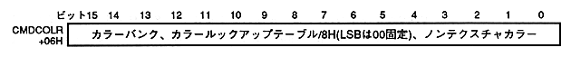

CMDCOLR specifies the color of the part. Functions vary depending on the part and color mode. Set the color bank, color lookup table address, or non-texture color. CMDCOLR is 16 bits at the command table start address + 06H.

CMDCOLR: Command table start address + 06H
Color bank for texture parts in color bank mode, color lookup table address for texture parts in lookup table mode, non-texture color for non-texture parts. This word is ignored when the texture part is in RGB mode.